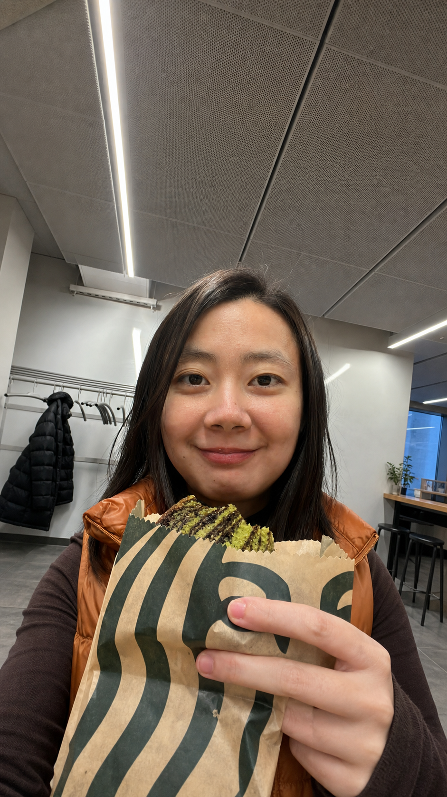

Glossary: A streaming-language learning extension
Designed and developed an AI-powered streaming language learning tool using subtitles, cultural notes, slang explanations, authentic usage, and learner motivation principles.
Learning design + UX + AI for education
I design learning experiences that make complex ideas feel usable, human, and worth returning to. My work brings together instructional design, learner research, language education, and product thinking.

Positioning
My strongest fit is a role where learning strategy, UX research, curriculum architecture, and AI-supported education meet. I am especially drawn to language learning, learner motivation, culturally responsive design, and tools that help people understand what to do next.
Selected work
Designed and developed an AI-powered streaming language learning tool using subtitles, cultural notes, slang explanations, authentic usage, and learner motivation principles.
Built an interactive reading workspace where learners can create sticky notes, highlight text, add annotations, organize notes by color, manage annotations and highlights in a repository, and reply to other users' comments.
Designed a Figma prototype for replayable listening audio, synchronized transcripts, word-level pronunciation, accent selection, and two-way audio navigation.
Designed and built a Custom GPT for TOEFL writing practice with task selection, timer rules, feedback sequencing, and guardrails that prevent the AI from writing answers for students.
View case studyDesigned a vocabulary and pronunciation game for children ages 6-8 with cultural content, spaced repetition, and multimedia learning principles.
View case studyCreated a trauma-informed workshop on mental health literacy to support reintegration, agency, and community resilience.
Job-fit compass
Designing learner journeys, course flows, assessments, and engagement strategies for digital programs.
Translating goals into curriculum, storyboards, workshops, and learning materials grounded in pedagogy.
Exploring how AI tools can support feedback, personalization, annotation, and learner confidence.
Using research, prototyping, and human-centered design to improve learning tools and workflows.
Experience
I have worked across hands-on instructional design, UX research, prototyping, cross-cultural collaboration, and AI-enhanced learning concepts.
Designed and prototyped the Interactive Annotation Hub, Smart Audio Transcript Player, and a TOEFL AI Writing Tutor to enhance the learner experience.
Designed and prototyped a cross-generational communication tool and synthesized user research into actionable design insights for conversational AI knowledge discovery.
Core strengths
Contact